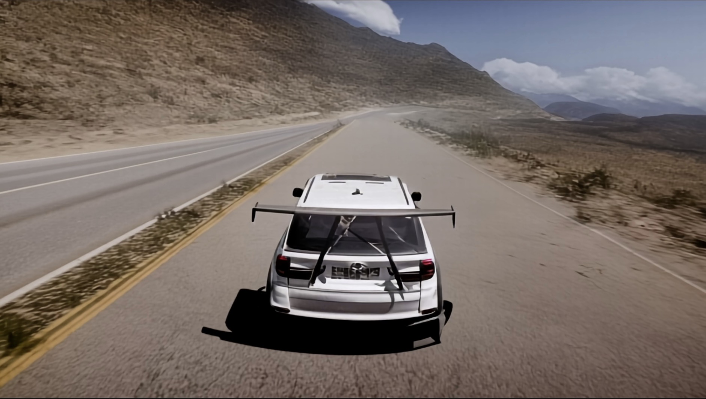

üöÄ Matrix Dataset Documentation
Last Updated: 2025-03-25
üåê Project Page üìÑ Research Paper üìÅ Dataset Docs üì¶GitHub
üìä Matrix Dataset
The Matrix dataset was first introduced by the Matrix team in the paper "The Matrix: Infinite-Horizon World Generation with Real-Time Moving Control." This dataset is specifically designed for training world models and comprises millions of video sequences accompanied by corresponding control signals.
üèéÔ∏è Forza Horizon 5
üñºÔ∏è Visual Content
- Multi-scene driving sequences
- Desert/Ocean/Grassland biomes
- Dynamic weather system
üì¶ Dataset Specs
- 1.2M video-control pairs
- Standardized 6-second clips
- Resolution: 2560×1600 @ 60FPS
üåÜ Cyberpunk 2077
üñºÔ∏è Visual Content
- Dense urban landscapes
- Day-night cycle (1:3 ratio)
- Indoor-outdoor transitions
üì¶ Dataset Specs
- 1.0M video-control pairs
- Standardized 6-second clips
- Resolution: 2560×1600 @ 60FPS
⚙️ Data collection&processing
üë• Research Team
Core Members
- • Ruili Feng - Tongyi Lab
- • Han Zhang - Tongyi Lab
- • Zhantao Yang - Tongyi Lab
- • Jie Xiao - Tongyi Lab
- • Zhilei Shu - Tongyi Lab
- • Zhiheng Liu - Tongyi Lab
- • Andy Zheng - Waterloo Univ
- • ShangWen Zhu - SJTU Univ
- • Yukun Huang - HKU
- • Yu Liu - Tongyi Lab
- • Hongyang Zhang - Vector
üìö Publications
@misc{feng2024matrixinfinitehorizonworldgeneration,
title={The Matrix: Infinite-Horizon World Generation with Real-Time Moving Control},
author={Ruili Feng and Han Zhang and Zhantao Yang and Jie Xiao and Zhilei Shu and Zhiheng Liu and Andy Zheng and Yukun Huang and Yu Liu and Hongyang Zhang},
year={2024},
eprint={2412.03568},
url={https://arxiv.org/abs/2412.03568}
}üîî Contact: https://matrixteam-ai.github.io/